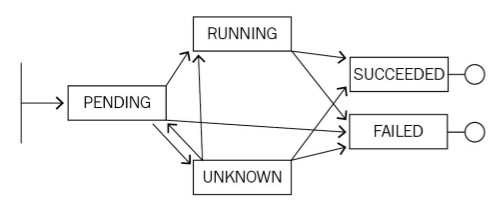
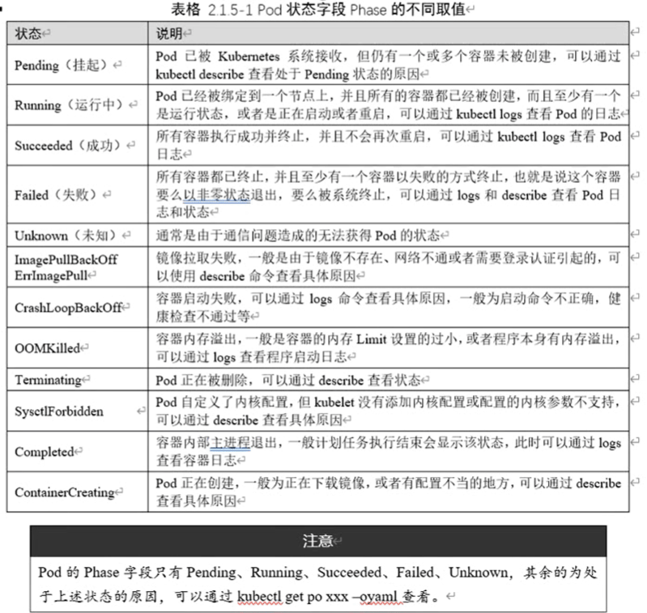
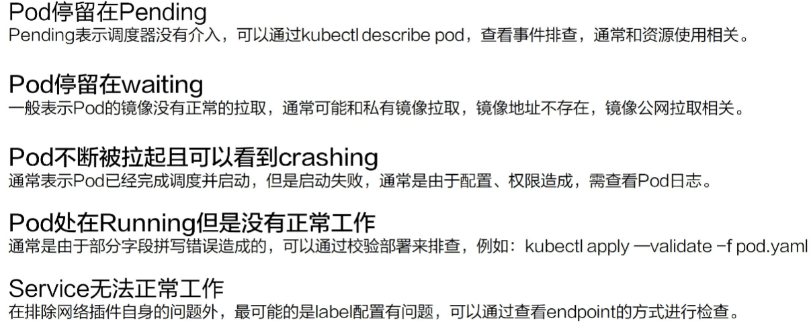
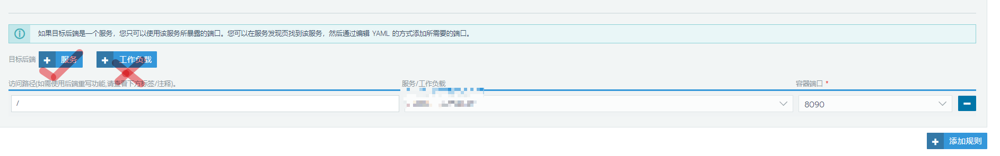
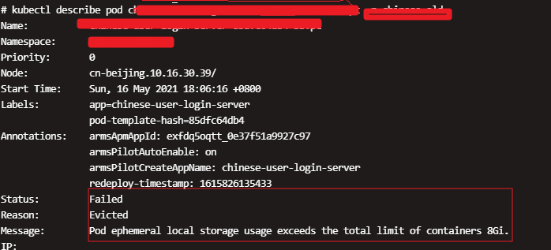
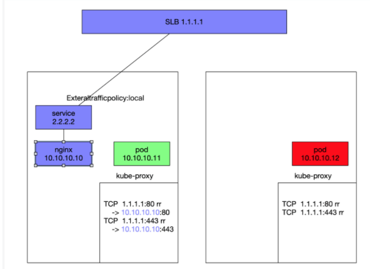
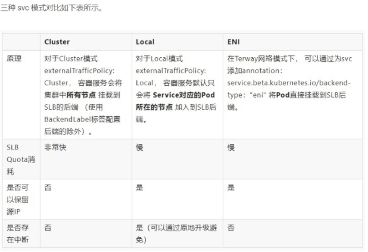

k8s故障处理
- TAGS: Kubernetes
应用故障排查-了解状态机制
K8s 是整个的一个设计是面向状态机的，它里面通过 yaml 的方式来定义的是一个期望到达 的一个状态，而真正这个 yaml 在执行过程中会由各种各样的 controller来负责整体的状 态之间的一个转换。

比如说上面的图，实际上是一个 Pod 的一个生命周期。刚开始它处在一个pending 的状态， 那接下来可能会转换到类似像 running，也可能转换到Unknown，甚至可以转换到 failed。 然后，当 running执行了一段时间之后，它可以转换到类似像 successded 或者是failed， 然后当出现在 unknown这个状态时，可能由于一些状态的恢复，它会重新恢复到 running 或者successded 或者是 failed。
其实 K8s整体的一个状态就是基于这种类似像状态机的一个机制进行转换的，而不同状态之 间的转化都会在相应的K8s对象上面留下来类似像 Status 或者像 Conditions 的一些字段 来进行表示

Pod 的阶段
参考：https://kubernetes.io/zh/docs/concepts/workloads/pods/pod-lifecycle/
Pod 的阶段（Phase）是 Pod 在其生命周期中所处位置的简单宏观概述。该阶段并不是对容 器或 Pod 状态的综合汇总，也不是为了成为完整的状态机。
Kubernetes 以 PodStatus.Phase 抽象 Pod的状态（但并不直接反映所有容器的状态）。
这个 Status 表示的是 Pod的一个聚合状态
下面是 phase 可能的值：
- Pending（悬决）： Pod 已被 Kubernetes 系统接受，但有一个或者多个容器尚未创建亦未运行。此阶段包括等待 Pod被调度的时间 和通过网络下载镜像的时间
- Running（运行中）： Pod 已经绑定到了某个节点，Pod 中所有的容器都已被创建。至少有一个容器仍在运行，或者正处于启动或重启状态。
- Succeeded（成功）： Pod 中的所有容器都已成功终止，并且不会再重启。
- Failed（失败）： Pod中的所有容器都已终止，并且至少有一个容器是因为失败终止。也 就是说，容器以非0 状态退出或者被系统终止。
- Unknown（未知）： 因为某些原因无法取得 Pod的状态。这种情况通常是因为与 Pod 所 在主机通信失败。
可以用 kubectl 命令查询 Pod Phase：
$ kubectl get pod reviews-v1-5bdc544bbd-5qgxj -o jsonpath="{.status.phase}" Running
容器状态
Kubernetes 会跟踪 Pod 中每个容器的状态，就像它跟踪 Pod总体上的阶段一样。你可以使
用容器生命周期回调 (PostStart, PreStop)来在容器生命周期中的特定时间点触发事
件。容器的状态有三种： Waiting （等待）、 Running （运行中）和 Terminated （已终
止）。
可以使用 kubectl describe pod <pod 名称> 。
其输出中 Containers.State 包含 Pod 中每个容器的状态。
$ kubectl describe pod mypod
...
Containers:
sh:
Container ID: docker://3f7a2ee0e7e0e16c22090a25f9b6e42b5c06ec049405bc34d3aa183060eb4906
Image: alpine
Image ID: docker-pullable://alpine@sha256:7b848083f93822dd21b0a2f14a110bd99f6efb4b838d499df6d04a49d0debf8b
Port: <none>
Host Port: <none>
State: Terminated
Reason: OOMKilled
Exit Code: 2
Last State: Terminated
Reason: OOMKilled
Exit Code: 2
Ready: False
Restart Count: 3
Limits:
cpu: 1
memory: 1G
Requests:
cpu: 100m
memory: 500M
...
# kubectl get pod chinese-user-login-server-85dfc64db4-rnqfn -n chinese-old -o yaml
...
containerStatuses:
- containerID: docker://030bef4fd72f9f1a237e6a7dada0cf41b3fbcc5471b873a5035e05d8124c4bb5
image: tope365-registry-vpc.cn-beijing.cr.aliyuncs.com/chinese-old-prod/chinese-user-login-server:3
imageID: docker-pullable://tope365-registry-vpc.cn-beijing.cr.aliyuncs.com/chinese-old-prod/chinese-user-login-server@sha256:6630b71f9b554b2d2b1a8ffa141e849f10c18348df1d7288d114f7840493fa6c
lastState: {}
name: chinese-user-login-server
ready: true
restartCount: 0
started: true
state:
running:
startedAt: "2021-06-01T13:13:38Z"
hostIP: 10.16.30.159
initContainerStatuses:
- containerID: docker://62ed6e20278d0e89c8e7d1477508babda0e6718a446b2d92b20ed8a89b9e15a1
image: registry-vpc.cn-beijing.aliyuncs.com/arms-docker-repo/arms-pilot-init:v1.0.1
imageID: docker-pullable://registry-vpc.cn-beijing.aliyuncs.com/arms-docker-repo/arms-pilot-init@sha256:a63c9a6d090e3ba7ec83c39c1aa92e8aca71181065a00f54087f3c6dcb0cb364
lastState: {}
name: arms-pilot-initcontainer
ready: true
restartCount: 0
state:
terminated:
containerID: docker://62ed6e20278d0e89c8e7d1477508babda0e6718a446b2d92b20ed8a89b9e15a1
exitCode: 0
finishedAt: "2021-06-01T13:13:37Z"
reason: Completed
startedAt: "2021-06-01T13:13:31Z"
phase: Running
...
# 命令过滤
rinfo2=`$kube_CMD -n $namespace get pods $rname -o go-template="{{range .status.containerStatuses}}{{.lastState.terminated.finishedAt}}@{{.lastState.terminated.reason}}{{end}}@{{.status.podIP}}@{{.status.hostIP}}"`
r_last_time=`date -d "@$(date -d "$(echo $rinfo2|awk -F@ '{print $1}')" +%s)" +"%F %H:%M:%S"`
rinfo="$rname发生重启，$rinfo，最近$r_last_time，原因：$(echo $rinfo2|awk -F@ '{print $2}')，容器ip/节点ip:$(echo $rinfo2|awk -F@ '{print $3}')/$(echo $rinfo2|awk -F@ '{print $4}')\n"
Waiting （等待） 如果容器并不处在 Running 或 Terminated=状态之一，它就处在
=Waiting 状态。 处于 Waiting 状态的容器仍在运行它完成启动所需要的操作：
例如，
从某个容器镜像仓库拉取容器镜像，或者向容器应用Secret数据等等。 当你使用
kubectl 来查询包含 Waiting 状态的容器的 Pod时，你也会看到一个 Reason 字段，
其中给出了容器处于等待状态的原因。
Running=（运行中） =Running 状态表明容器正在执行状态并且没有问题发生。
如果配置了 postStart 回调，那么该回调已经执行且已完成。 如果你使用
kubectl 来查询包含 Running 状态的容器的 Pod 时，你也会看到
关于容器进入 Running 状态的信息。
Terminated=（已终止） 处于 =Terminated 状态的容器已经开始执行并且或者正常结束或
者因为某些原因失败。 如果你使用 kubectl 来查询包含 Terminated 状态的容器的
Pod 时，你会看到容器进入此状态的原因、退出代码以及容器执行期间的起止时间。
如果容器配置了 preStop 回调，则该回调会在容器进入 Terminated 状态之前执行。
pod状况
Pod 有一个 PodStatus 对象，其中包含一个PodConditions数组。Pod可能通过也可能未通 过其中的一些状况测试。这个状态之间的聚合会变成上层的这个Status。
PodConditions 数组有
- PodScheduled：Pod 已经被调度到某节点；
- ContainersReady：Pod 中所有容器都已就绪；
- Initialized：所有的 Init 容器 都已成功启动；
- Ready：Pod 可以为请求提供服务，并且应该被添加到对应服务的负载均衡池中。
数组内包含：
type： Pod 状况的名称 status： 表明该状况是否适用，可能的取值有 "True", "False" 或 "Unknown" lastProbeTime： 上次探测 Pod 状况时的时间戳 lastTransitionTime：Pod 上次从一种状态转换到另一种状态时的时间戳 reason： 机器可读的、驼峰编码（UpperCamelCase）的文字，表述上次状况变化的原因 message： 人类可读的消息，给出上次状态转换的详细信息
可以使用kubectl 命令查询
# kubectl describe pod chinese-user-login-server-85dfc64db4-rnqfn -n chinese-old ... Conditions: Type Status Initialized True Ready True ContainersReady True PodScheduled True ... # kubectl get pod chinese-user-login-server-85dfc64db4-rnqfn -n chinese-old -o yaml ... status: conditions: - lastProbeTime: null lastTransitionTime: "2021-06-01T13:13:38Z" status: "True" type: Initialized - lastProbeTime: null lastTransitionTime: "2021-06-01T13:15:23Z" status: "True" type: Ready - lastProbeTime: null lastTransitionTime: "2021-06-01T13:15:23Z" status: "True" type: ContainersReady - lastProbeTime: null lastTransitionTime: "2021-06-01T13:13:30Z" status: "True" type: PodScheduled ...
pod 事件
查看 Pod 的事件
# 查看Pod的事件 # 1. kubectl describe pod mypod ... Events: Type Reason Age From Message ---- ------ ---- ---- ------- Warning FailedScheduling 12s (x6 over 27s) default-scheduler 0/4 nodes are available: 2 Insufficient cpu. #2. kubectl get events --field-selector involvedObject.name=nginx-85cb5867f-bs7pn,involvedObject.kind=Pod
事件类型：
type Event struct { ... // This should be a short, machine understandable string that gives the reason // for the transition into the object's current status. // TODO: provide exact specification for format. // +optional Reason string `json:"reason,omitempty" protobuf:"bytes,3,opt,name=reason"` // A human-readable description of the status of this operation. // TODO: decide on maximum length. // +optional Message string `json:"message,omitempty" protobuf:"bytes,4,opt,name=message"` // Type of this event (Normal, Warning), new types could be added in the future // +optional Type string `json:"type,omitempty" protobuf:"bytes,9,opt,name=type"` ... }
事件原因
// Container event reason list const ( CreatedContainer = "Created" StartedContainer = "Started" FailedToCreateContainer = "Failed" FailedToStartContainer = "Failed" KillingContainer = "Killing" PreemptContainer = "Preempting" BackOffStartContainer = "BackOff" ExceededGracePeriod = "ExceededGracePeriod" ) // Pod event reason list const ( FailedToKillPod = "FailedKillPod" FailedToCreatePodContainer = "FailedCreatePodContainer" FailedToMakePodDataDirectories = "Failed" NetworkNotReady = "NetworkNotReady" ) // Image event reason list const ( PullingImage = "Pulling" PulledImage = "Pulled" FailedToPullImage = "Failed" FailedToInspectImage = "InspectFailed" ErrImageNeverPullPolicy = "ErrImageNeverPull" BackOffPullImage = "BackOff" ) // kubelet event reason list const ( NodeReady = "NodeReady" NodeNotReady = "NodeNotReady" NodeSchedulable = "NodeSchedulable" NodeNotSchedulable = "NodeNotSchedulable" StartingKubelet = "Starting" KubeletSetupFailed = "KubeletSetupFailed" FailedAttachVolume = "FailedAttachVolume" FailedMountVolume = "FailedMount" VolumeResizeFailed = "VolumeResizeFailed" VolumeResizeSuccess = "VolumeResizeSuccessful" FileSystemResizeFailed = "FileSystemResizeFailed" FileSystemResizeSuccess = "FileSystemResizeSuccessful" FailedMapVolume = "FailedMapVolume" WarnAlreadyMountedVolume = "AlreadyMountedVolume" SuccessfulAttachVolume = "SuccessfulAttachVolume" SuccessfulMountVolume = "SuccessfulMountVolume" NodeRebooted = "Rebooted" ContainerGCFailed = "ContainerGCFailed" ImageGCFailed = "ImageGCFailed" FailedNodeAllocatableEnforcement = "FailedNodeAllocatableEnforcement" SuccessfulNodeAllocatableEnforcement = "NodeAllocatableEnforced" SandboxChanged = "SandboxChanged" FailedCreatePodSandBox = "FailedCreatePodSandBox" FailedStatusPodSandBox = "FailedPodSandBoxStatus" FailedMountOnFilesystemMismatch = "FailedMountOnFilesystemMismatch" ) // Image manager event reason list const ( InvalidDiskCapacity = "InvalidDiskCapacity" FreeDiskSpaceFailed = "FreeDiskSpaceFailed" ) // Probe event reason list const ( ContainerUnhealthy = "Unhealthy" ContainerProbeWarning = "ProbeWarning" ) // Pod worker event reason list const ( FailedSync = "FailedSync" ) // Config event reason list const ( FailedValidation = "FailedValidation" )
容器事件原因
容器事件
RunContainerError 容器无法启动。挂载了不存在的卷、创建不了镜像 CrashLoopBackOff 容器曾经启动了，但又异常退出了。应用程序中存在错误、Liveness探针失败次数太多 KillContainerError CreatePodSandboxError ConfigPodSandboxError KillPodSandboxError no matching container
范例：RunContainerError状态
#kubectl describe pod mypod ... Status: Pending Containers: udp-echo: ... State: Waiting Reason: RunContainerError Ready: False Conditions: Type Status Ready False ... Events: Type Reason Message --------- -------- ----- ---- ------------- -------- ------ ------- Normal Scheduled Successfully assigned my-udp-rc-ld468 to e2e-test-mixia-minion-9ou9 Normal Pulling pulling image "gcr.io/mixia-kube/udptest:v1" Normal Pulled Successfully pulled image "gcr.io/mixia-kube/udptest:v1" Warning Failed Failed to create docker container with error: Error: No such image: gcr.io/mixia-kube/udptest:v1 Warning FailedSync Error syncing pod, skipping: failed to "StartContainer" for "udp-echo" with RunContainerError: "runContainer: Error: No such image: gcr.io/mixia-kube/udptest:v1" # kubelet.log日志 E0411 17:51:03.049180 3391 pod_workers.go:138] Error syncing pod f4d5367c-000d-11e6-95cc-42010af00002, skipping: failed to "StartContainer" for "udp-echo" with RunContainerError: "runContainer: Error: No such image: gcr.io/mixia-kube/udptest:v1"
范例：CrashLoopBackOff状态ERROR状态
# kubectl get pod english-readmanager2-76598ccd6b-4pch9 -n english-prod NAME READY STATUS RESTARTS AGE english-readmanager2-76598ccd6b-4pch9 0/1 CrashLoopBackOff 5 9m59s # kubectl describe pod english-readmanager2-76598ccd6b-4pch9 -n english-prod Status: Running Containers: english-readmanager2: State: Waiting Reason: CrashLoopBackOff Ready: False Restart Count: 5 Conditions: Type Status Initialized True Ready False ContainersReady False PodScheduled True Events: Type Reason Age From Message ---- ------ ---- ---- ------- Warning Unhealthy 7m6s (x4 over 8m46s) kubelet, cn-beijing.10.16.20.1 Readiness probe failed: Get http://172.20.28.194:8090/health: dial tcp Warning BackOff 8s (x24 over 7m52s) kubelet, cn-beijing.10.16.20.1 Back-off restarting failed container # kubectl get pod english-readmanager2-76598ccd6b-4pch9 -n english-prod NAME READY STATUS RESTARTS AGE english-readmanager2-76598ccd6b-4pch9 0/1 Error 6 11m # kubectl describe pod english-readmanager2-76598ccd6b-4pch9 -n english-prod Status: Running Init Containers: arms-pilot-initcontainer: State: Terminated Reason: Completed Exit Code: 0 Containers: State: Terminated Reason: Error Exit Code: 1 Ready: False Restart Count: 6 Conditions: Type Status Initialized True Ready False ContainersReady False PodScheduled True Events: Type Reason Age From Message ---- ------ ---- ---- ------- Warning Unhealthy 8m30s (x4 over 10m) kubelet, cn-beijing.10.16.20.1 Readiness probe failed: Get http://172.20.28.194:8090/health: Warning BackOff 92s (x24 over 9m16s) kubelet, cn-beijing.10.16.20.1 Back-off restarting failed container # 容器业务报错 #kubectl logs <pod-name> [-c <container-name>] Error starting ApplicationContext. To display the conditions report re-run your application with 'debug' enabled. ]
dockershim容器
OOMKilled Completed 容器进程结束。sidercar中可以看到 Error ContainerCannotRun
范例：OOMKilled
# kubectl describe pod mem-nginx ... Status: Running Containers: ... State: Running Started: Fri, 22 May 2020 11:20:13 +0800 Last State: Terminated Reason: OOMKilled Exit Code: 0 Ready: True ... Conditions: Type Status Initialized True Ready True ContainersReady True PodScheduled True Events: Type Reason Age From Message ---- ------ ---- ---- ------- Normal SandboxChanged 2m3s (x2 over 10m) kubelet, paasn3 Pod sandbox changed, it will be killed and re-created. Normal Killing 2m2s (x2 over 10m) kubelet, paasn3 Killing container with id docker://mem-nginx-container:Need to kill Pod Normal Pulled 2m (x3 over 17h) kubelet, paasn3 Container image "registry.paas/library/nginx:1.15.9" already present on machine Normal Created 2m (x3 over 17h) kubelet, paasn3 Created container Normal Started 2m (x3 over 17h) kubelet, paasn3 Started container
Pod事件原因
镜像事件原因
ImagePullBackOff 通常是镜像名称配置错误或者私有镜像的密钥配置错误导致 ImageInspectError ErrImagePull ErrImageNeverPull RegistryUnavailable InvalidImageName
范例：ImagePullBackOff
kubectl get pods NAME READY STATUS RESTARTS AGE app1 0/1 ImagePullBackOff 0 47h # kubectl describe pods --namespace=kube-system ... Status: Pending Containers: kubernetes-dashboard: ... State: Waiting Reason: ImagePullBackOff Ready: False ... Conditions: Type Status Initialized True Ready False PodScheduled True ... Events: Type Reason Message --------- -------- ----- ---- ------------- -------- ------ ------- Normal Scheduled Successfully assigned kubernetes-dashboard-3825951078-ywerf to 127.0.0.1 Warning Failed Failed to pull image "gcr.io/google_containers/kubernetes-dashboard-amd64:v1.1.1" Warning FailedSync Error syncing pod, skipping: failed to "StartContainer" for "kubernetes-dashboard" with ErrImagePull: Normal BackOff Back-off pulling image "gcr.io/google_containers/kubernetes-dashboard-amd64:v1.1.1" Warning FailedSync Error syncing pod, skipping: failed to "StartContainer" for "kubernetes-dashboard" with ImagePullBackOff: "Back-off pulling image \"gcr.io/google_containers/kubernetes-dashboard-amd64:v1.1.1\"" Normal Pulling pulling image "gcr.io/google_containers/kubernetes-dashboard-amd64:v1.1.1"
kubelet事件原因
pod日志
kubectl logs <pod-name> [-c <container-name>]
应用故障排查-常见应用异常

Pod 停留在 Pending pending 表示调度器没有进行介入。可以通过 kubectl describe pod 查看事件排查，通常和资源使用相关。
如果由于资源或者说端口占用，或者是由于 node selector 造成 pod无法调度的时候，可 以在相应的事件里面看到相应的结果，这个结果里面会表示说有多少个不满足的node，有多 少是因为 CPU 不满足，有多少是由于 node 不满足，有多少是由于tag 打标造成的不满足。
Pod 停留在 waiting 通常表示说这个 pod的镜像没有正常拉取，原因可能是由于这个镜像 是私有镜像，但是没有配置 Pod secret；那第二种是说可能由于这个镜像地址是不存在的， 造成这个镜像拉取不下来；还有这个镜像可能是一个公网的镜像，造成镜像的拉取失败。
Pod 不断被拉取并且可以看到 crashing pod 不断被拉起，而且可以看到类似像backoff。 这个通常表示说 pod已经被调度完成了，但是启动失败，通常要关注的应该是这个应用自身 的一个状态，并不是说配置是否正确、权限是否正确，此时需要查看的应该是pod 的具体日 志。
Pod 处在 Runing 但是没有正常工作比较常见可能是一些非常细碎的配置，类似像有一些字 段可能拼写错误，造成了yaml 下发下去了，但是有一段没有正常地生效，从而使得这个 pod 处在 running的状态没有对外服。可以通过检验部署来排查 。kubectl apply-validate-f pod.yaml 的方式来进行判断当前 yaml 是否是正常的。
Service 无法正常的工作 最后一种就是 service无法正常工作的时候，该怎么去判断呢？ 那比较常见的 service出现问题的时候，是自己的使用上面出现了问题。因为 service 和 底层的 pod之间的关联关系是通过 selector 的方式来匹配的，也就是说 pod上面配置了一 些 label，然后 service 通过 match label 的方式和这个 pod进行相互关联。如果这个 label 配置的有问题，可能会造成这个 service无法找到后面的 endpoint，从而造成相应 的 service没有办法对外提供服务，那如果 service 出现异常的时候，第一个要看的是这 个service 后面是不是有一个真正的 endpoint，其次来看这个 endpoint是否可以对外提供 正常的服务。
Kubernetes 故障
节点PLEG异常
现象：
[container runtime status check may not have completed yet, PLEG is not healthy: pleg was last seen active 3m28.93894374s ago; threshold is 3m0s] skipping pod synchronization - container runtime status check may not have completed yet
原因：
PLEG是pod生命周期事件生成器，会记录Pod生命周期中的各种事件，如容器的启动、终止等。一般是由于节点上的daemon进程异常或者节点systemd版本bug导致。出现该问题会导致集群节点不可用
升级k8s集群版本，其中一台实例由于systemd 低版本问题触发hang住，通过重启runc服务后完成升级。建议后续针对节点中存在同样版本的实例做下升级（现在快照备份）
解决：
1. 保留当时现场诊断信息后 执行的操作是system restart docker 服务来恢复的 https://help.aliyun.com/knowledge_detail/178340.html CentOS 7.6系统使用的systemd-219-62.el7_6.6.x86_64软件包存在缺陷，引发异常错误 2. yum update -y systemd && systemctl daemon-reexec
状态码503
现象：
域名访问503，域名通过rancher路由配置代码后端
原因：
rancher使用了工作负载来代理后端，实际是由rancher维护的service(无头service)绑定后端工作负载。在rancher服务不可用时，ingress无法找到该service的和后端的关系导致503.
解决：
方法1： 启动rancher，关系自动找到，访问200 方法2： 路由改成目录为后端服务，即自身的service来访问pod

ephemeral-storage存储限制
问题描述
# pod设置临时空间 ephemeral-storage: 8Gi # 资源紧张，Evicted
Pod ephemeral local storage usage exceeds the total limit of containers 8Gi.

问题小结：
如果运行时指定了别的独立的分区，比如修改了docker的镜像层和容器可写层的存储位置(默认是/var/lib/docker)所在的分区，将不再将其计入ephemeral-storage的消耗。 在容器写入超过存储限制时就会被驱逐掉了
Kubelet
主动监测和防止 计算资源的全面短缺。在资源短缺时， kubelet
可以主动地结束一个或多个 Pod 以回收短缺的资源。 当 kubelet 结束一个
Pod 时，它将终止 Pod 中的所有容器，而 Pod 的 Phase 将变为 =Failed=。
如果被驱逐的 Pod 由 Deployment 管理，这个 Deployment 会创建另一个 Pod 给
Kubernetes 来调度。
参考：https://v1-20.docs.kubernetes.io/zh/docs/concepts/scheduling-eviction/eviction-policy/
field is immutable
报错信息
MatchExpressions:[]v1.LabelSelectorRequirement(nil)}: field is immutable
原因：这个问题的本质原因是，两个相同的Deployment（一个已部署，一个要部署），但它们选择器不同。
解决方式： 1： 可以将原先的deployment删除后再部署 2： 修改deployment的名字，不要重名
现象：
[root@iZ2zegdxx2xkt57v45rtl2Z ~]# kubectl apply -f /tmp/deploy.yaml service/english-grammar-web created The Deployment "english-grammar-web" is invalid: spec.selector: Invalid value: v1.LabelSelector{MatchLabels:map[string]string{"app":"english-grammar-web", "release":"qa"}, MatchExpressions:[]v1.LabelSelectorRequirement(nil)}: field is immutabl # 我这里之前release是pre
pod-亲和问题
现象：
pod peding报错：0/92 nodes are available: 1 node(s) didn't match pod affinity/anti-affinity, 1 node(s) didn't satisfy existing pods anti-affinity rules, 14 Insufficient memory, 29 Insufficient cpu, 56 node(s) didn't match node selector. pod 状态： NAME READY STATUS RESTARTS AGE callbreak-room-1-665d446596-hfrhk 0/1 Running 0 20d callbreak-room-1-6fdb565b8d-5dm2s 0/1 Pending 0 7m55s
原因跟踪： pod设置了pod反亲和，同一个room-1标签不在一个节点上存在。 目前callbreak有3个节点，2个节点资源吃紧，1个节点有富余且存在 pod room-1 发布新room-1时，只一个节点有资源，但不满足亲和规则，导致新发布pending
解决： 1. 临时删除旧pod room-1 2. 考虑优先加1节点，后期对pod资源限制做合理规划。
service-LoadBalancer模式下cluster策略获取用户真实IP
背景： 上面是网络采用flannel出现的问题，用terway不存在。
- Cluster模式限制 之前2个namespce间相互访问，ingress的service用的type:LoadBalancer模式，externalTrafficPolicy:Cluster外部流量策略Cluster。但这样一来用户真实ip无法显示了。
- Local模式限制
因为在local模式下，kube-proxy限制，只有同节点的pod通过slb访问通。

- 真实IP获取途径
"X-Forwarded-For", "X-Real-IP", "Proxy-Client-IP", "WL-Proxy-Client-IP", "HTTP_CLIENT_IP", "HTTP_X_FORWARDED_FOR"

参考： 更新应用时，如何实现K8s零中断滚动更新 https://blog.csdn.net/alitech2017/article/details/106526418
解决：
flannel下，要用cluster外部流量策略 flannel当前版本：v0.11.0.2-g6e46593e-aliyun
- pod的spec里面，加上 更新nginx ingress controller的yaml podip现在是节点的ip
dnsPolicy: ClusterFirstWithHostNet hostNetwork: true
参数解释 "ClusterFirstWithHostNet"：对于以 hostNetwork 方式运行的 Pod，应显式设置其 DNS 策略 "ClusterFirstWithHostNet" 参考: https://kubernetes.io/zh/docs/concepts/services-networking/dns-pod-service/
- service的metadata里面，加上 更新nginx ingress service yaml hostnetwork和eni是解决那个源ip问题 ENI 模式（阿里云特有模式）
metadata:
annotations:
service.beta.kubernetes.io/backend-type: eni
通过设置 service.beta.kubernetes.io/backend-type: "eni" annotation 可以创建 ENI 模式的 SLB。ENI 模式下，pod会直接挂载到 SLB 后端，不经过 kube-proxy，因此不存在服务中断的问题。请求直接转发到 pod，因此可以保留源 IP 地址。
nginx-ingress-controller.yml
apiVersion: apps/v1
kind: Deployment
metadata:
annotations:
component.revision: v5
component.version: v0.22.0
deployment.kubernetes.io/revision: '3'
field.cattle.io/publicEndpoints: >-
creationTimestamp: '2020-07-18T01:48:36Z'
generation: 7
labels:
app: ingress-nginx
name: nginx-ingress-controller
namespace: kube-system
resourceVersion: '793741697'
selfLink: /apis/apps/v1/namespaces/kube-system/deployments/nginx-ingress-controller
uid: b77c8097-2d3b-4c6b-b33a-656b7a62f5eb
spec:
progressDeadlineSeconds: 600
replicas: 2
revisionHistoryLimit: 10
selector:
matchLabels:
app: ingress-nginx
strategy:
rollingUpdate:
maxSurge: 25%
maxUnavailable: 25%
type: RollingUpdate
template:
metadata:
annotations:
cattle.io/timestamp: '2020-09-28T09:38:08Z'
field.cattle.io/ports: >-
[[{"containerPort":80,"dnsName":"nginx-ingress-controller","hostPort":0,"kind":"ClusterIP","name":"http","protocol":"TCP","sourcePort":0},{"containerPort":443,"dnsName":"nginx-ingress-controller","hostPort":0,"kind":"ClusterIP","name":"https","protocol":"TCP","sourcePort":0}]]
prometheus.io/port: '10254'
prometheus.io/scrape: 'true'
labels:
app: ingress-nginx
spec:
affinity:
nodeAffinity:
requiredDuringSchedulingIgnoredDuringExecution:
nodeSelectorTerms:
- matchExpressions:
- key: type
operator: NotIn
values:
- virtual-kubelet
podAntiAffinity:
preferredDuringSchedulingIgnoredDuringExecution:
- podAffinityTerm:
labelSelector:
matchExpressions:
- key: app
operator: In
values:
- ingress-nginx
topologyKey: kubernetes.io/hostname
weight: 100
containers:
- args:
- /nginx-ingress-controller
- '--configmap=$(POD_NAMESPACE)/nginx-configuration'
- '--tcp-services-configmap=$(POD_NAMESPACE)/tcp-services'
- '--udp-services-configmap=$(POD_NAMESPACE)/udp-services'
- '--annotations-prefix=nginx.ingress.kubernetes.io'
- '--publish-service=$(POD_NAMESPACE)/nginx-ingress-lb'
- '--v=2'
env:
- name: POD_NAME
valueFrom:
fieldRef:
apiVersion: v1
fieldPath: metadata.name
- name: POD_NAMESPACE
valueFrom:
fieldRef:
apiVersion: v1
fieldPath: metadata.namespace
image: >-
registry-vpc.cn-beijing.aliyuncs.com/acs/aliyun-ingress-controller:v0.30.0.2-9597b3685-aliyun
imagePullPolicy: IfNotPresent
livenessProbe:
failureThreshold: 3
httpGet:
path: /healthz
port: 10254
scheme: HTTP
initialDelaySeconds: 10
periodSeconds: 10
successThreshold: 1
timeoutSeconds: 10
name: nginx-ingress-controller
ports:
- containerPort: 80
hostPort: 80
name: http
protocol: TCP
- containerPort: 443
hostPort: 443
name: https
protocol: TCP
readinessProbe:
failureThreshold: 3
httpGet:
path: /healthz
port: 10254
scheme: HTTP
periodSeconds: 10
successThreshold: 1
timeoutSeconds: 10
resources:
requests:
cpu: 100m
memory: 70Mi
securityContext:
capabilities:
add:
- NET_BIND_SERVICE
drop:
- ALL
runAsUser: 101
terminationMessagePath: /dev/termination-log
terminationMessagePolicy: File
volumeMounts:
- mountPath: /etc/localtime
name: localtime
readOnly: true
dnsPolicy: ClusterFirstWithHostNet
hostNetwork: true
initContainers:
- command:
- /bin/sh
- '-c'
- |-
mount -o remount rw /proc/sys
sysctl -w net.core.somaxconn=65535
sysctl -w net.ipv4.ip_local_port_range="1024 65535"
sysctl -w fs.file-max=1048576
sysctl -w fs.inotify.max_user_instances=16384
sysctl -w fs.inotify.max_user_watches=524288
sysctl -w fs.inotify.max_queued_events=16384
image: 'registry-vpc.cn-beijing.aliyuncs.com/acs/busybox:v1.29.2'
imagePullPolicy: IfNotPresent
name: init-sysctl
resources: {}
securityContext:
capabilities:
add:
- SYS_ADMIN
drop:
- ALL
terminationMessagePath: /dev/termination-log
terminationMessagePolicy: File
nodeSelector:
beta.kubernetes.io/os: linux
priorityClassName: system-node-critical
restartPolicy: Always
schedulerName: default-scheduler
securityContext: {}
serviceAccount: nginx-ingress-controller
serviceAccountName: nginx-ingress-controller
terminationGracePeriodSeconds: 30
volumes:
- hostPath:
path: /etc/localtime
type: File
name: localtime
status:
availableReplicas: 2
conditions:
- lastTransitionTime: '2020-09-28T09:19:36Z'
lastUpdateTime: '2020-09-28T09:19:36Z'
message: Deployment has minimum availability.
reason: MinimumReplicasAvailable
status: 'True'
type: Available
- lastTransitionTime: '2020-07-18T01:48:36Z'
lastUpdateTime: '2020-10-19T12:02:09Z'
message: >-
ReplicaSet "nginx-ingress-controller-68bd54b66c" has successfully
progressed.
reason: NewReplicaSetAvailable
status: 'True'
type: Progressing
observedGeneration: 7
readyReplicas: 2
replicas: 2
updatedReplicas: 2
nginx-ingress-lb.yml
apiVersion: v1
kind: Service
metadata:
annotations:
service.beta.kubernetes.io/alicloud-loadbalancer-address-type: internet
service.beta.kubernetes.io/backend-type: eni
creationTimestamp: '2020-07-18T01:48:36Z'
labels:
app: nginx-ingress-lb
name: nginx-ingress-lb
namespace: kube-system
resourceVersion: '793911773'
selfLink: /api/v1/namespaces/kube-system/services/nginx-ingress-lb
uid: db3fec56-e8ed-40b9-9d5f-cb8b38dba808
spec:
clusterIP: 172.24.8.22
externalTrafficPolicy: Cluster
ports:
- name: http
nodePort: 31820
port: 80
protocol: TCP
targetPort: 80
- name: https
nodePort: 31114
port: 443
protocol: TCP
targetPort: 443
selector:
app: ingress-nginx
sessionAffinity: None
type: LoadBalancer
status:
loadBalancer:
ingress:
- ip: 39.105.75.81
k8s-删除名称空间卡住
查看命名空间
# kubectl get ns kubesphere‐system Terminating 28m
发现kubesphere-system一直处于Terminating 状态。无法删除命名空间！！
解决方法
查看kubesphere-system的namespace描述
kubectl get ns kubesphere‐system ‐o json > kubesphere‐system.json
编辑json文件，删除spec字段的内存，因为k8s集群时需要认证的
# vi kubesphere‐system.json
"spec": {
"finalizers": [
"kubernetes"
]
},
更改为：
"spec": {
},
新开一个窗口运行kubectl proxy跑一个API代理在本地的8081端口
# kubectl proxy ‐‐port=8081
最后运行curl命令进行删除
curl ‐k ‐H "Content‐Type:application/json" ‐X PUT ‐‐data‐binary @kubesphe re‐system.json http://127.0.0.1:8081/api/v1/namespaces/kubesphere‐system/fi nalize
注意：命令中的kubesphere-system就是命名空间。
本文参考链接： https://blog.csdn.net/tongzidane/article/details/88988542
rancher
证书过期
rancher 2.3.x到期无法使用问题 x509: certificate has expired or is not yet valid
问题小结：
参考：http://docs.rancher.cn/docs/rancher2/trending-topics/certificate-rotation/_index/ 2.3 +
# 修改主机时间，删除crt文件 timedatectl set-ntp off date -s "2020-10-16 09:03:00.000" docker restart <rancher_server_id> docker exec -ti <rancher_server_id> mv /var/lib/rancher/k3s/server/tls /var/lib/rancher/k3s/server/tlsbak docker stop <rancher_server_id> # 恢复时间 并让ran轮换证书 systemctl start ntpd docker exec -ti <rancher_server_id> mv /var/lib/rancher/k3s/server/tls /var/lib/rancher/k3s/server/tlsbak # 执行2次重启，第一次用于申请证书，第二次用于加载证书并启动 docker restart <rancher_server_id>